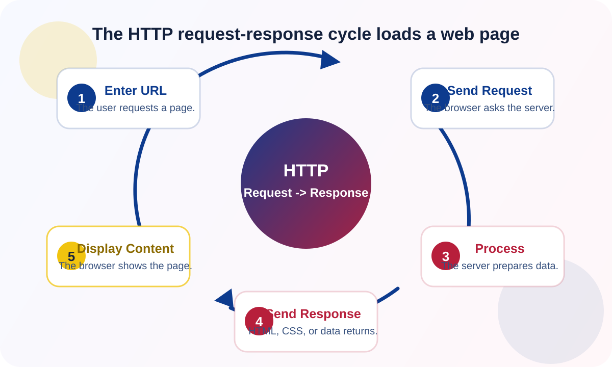

The HTTP request-response cycle is the process where a client asks a server for a resource and the server sends back a response.
HTTP Request-Response Cycle
This page explains the HTTP request-response cycle using its definition, role, analogy, and cycle steps.

It explains how web pages load when users enter URLs or click links.
Like ordering food: the customer makes an order, the kitchen prepares it, and the waiter delivers it.
- User enters URL.
- Browser sends request.
- Server processes request.
- Server sends response.
- Browser displays content.